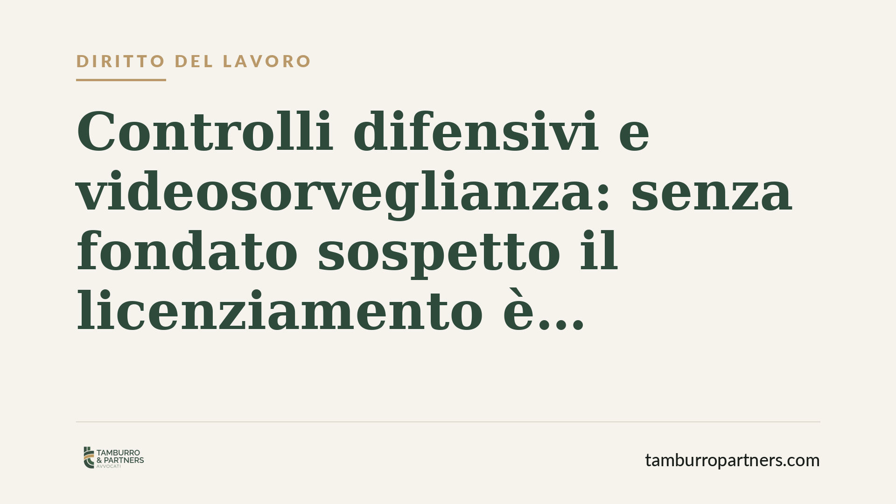

Controlli difensivi e videosorveglianza: senza fondato sospetto il licenziamento è illegittimo
La Cassazione Sezione Lavoro ha annullato il licenziamento di un dipendente di supermercato basato su riprese video occulte. Il principio è netto: la sorveglianza nascosta è ammessa solo in presenza di un fondato sospetto già maturato prima dell'installazione. Senza quel presupposto, le prove raccolte sono inutilizzabili e il recesso cade. Una decisione che ridefinisce i confini del cosiddetto controllo difensivo.

Il caso
Un lavoratore di un supermercato viene licenziato sulla base di filmati che lo ritraggono in condotte contestate dal datore. Le riprese erano state effettuate con telecamere installate senza informativa e in assenza delle procedure di garanzia previste dalla legge. La Corte d'Appello di Roma aveva ritenuto legittimo il recesso; la Cassazione ribalta l'impostazione e annulla il licenziamento, dichiarando inutilizzabili le prove video.
Il punto centrale non è la gravità della condotta contestata, ma la legittimità dello strumento con cui è stata accertata. Se la prova è raccolta in violazione di legge, non entra nel processo. E se il licenziamento si regge solo su quella prova, viene meno.
Inquadramento normativo
La materia è governata dall'art. 4 dello Statuto dei lavoratori (L. 300/1970), riformato dal D.Lgs. 151/2015. La norma consente l'uso di impianti audiovisivi solo per esigenze organizzative, produttive, di sicurezza del lavoro o di tutela del patrimonio aziendale, previo accordo sindacale o autorizzazione dell'Ispettorato del Lavoro. È inoltre necessaria un'adeguata informativa ai lavoratori.
Accanto a questa disciplina, la giurisprudenza ha elaborato la categoria dei controlli difensivi: verifiche dirette non a monitorare l'attività lavorativa in generale, ma ad accertare condotte illecite specifiche del dipendente. La Cassazione, con l'orientamento delle Sezioni Unite e le pronunce successive, ha però posto un limite preciso. Il controllo difensivo "in senso stretto" è ammesso solo quando il datore abbia già un fondato sospetto di un illecito, maturato prima dell'attivazione della sorveglianza. Non può trasformarsi in un monitoraggio generalizzato e preventivo, alla ricerca di irregolarità non ancora ipotizzate.
La distinzione è sostanziale: il sospetto deve precedere il controllo, non nascere da esso. Una sorveglianza attivata "a strascico", nella speranza di sorprendere qualche condotta, resta illegittima anche se poi effettivamente rileva un illecito.
Implicazioni pratiche
Per il datore di lavoro la sentenza restringe un margine operativo che spesso viene sopravvalutato. Installare telecamere nascoste "per sicurezza" e utilizzarle in un secondo momento come prova disciplinare è una strategia fragile. Se manca il fondato sospetto documentabile e anteriore, il materiale raccolto è inutilizzabile in giudizio, con il rischio concreto di vedersi annullare il provvedimento e di dover reintegrare o indennizzare il lavoratore.
Per il lavoratore, la decisione conferma una tutela robusta della riservatezza sul luogo di lavoro. Un licenziamento sorretto da prove video acquisite in violazione dell'art. 4 può essere contestato con buone probabilità di successo, a prescindere dal merito della condotta.
Va segnalato un profilo ulteriore: l'inutilizzabilità della prova non equivale ad assoluzione. Se il datore dispone di altri elementi legittimi a sostegno della contestazione, il licenziamento può reggere. Cade invece quando la videosorveglianza illecita è l'unico o il decisivo fondamento.
Cosa fare in concreto
Per il datore di lavoro:
- Attiva la videosorveglianza solo dopo aver rispettato l'art. 4 St. lav.: accordo sindacale o autorizzazione dell'Ispettorato del Lavoro e informativa ai dipendenti.
- Documenta per iscritto il fondato sospetto prima di ogni controllo difensivo mirato: annotazioni, segnalazioni, ammanchi rilevati, con data certa.
- Non fondare un licenziamento esclusivamente su riprese occulte: raccogli e conserva prove alternative e autonome.
Per il lavoratore:
- Verifica se il provvedimento disciplinare si basa su riprese video e chiedi conto delle autorizzazioni e dell'informativa.
- Impugna il licenziamento nei termini di legge (60 giorni per la contestazione stragiudiziale) e conserva ogni comunicazione ricevuta.
Consigliamo, in entrambi i casi, di far valutare la specifica documentazione da un professionista prima di assumere iniziative: la linea di confine tra controllo lecito e illecito è sottile e dipende dai dettagli fattuali.
Disclaimer
Contributo informativo a cura di Tamburro & Partners - Avv. Giuseppe Tamburro. Non costituisce parere legale.
Ogni storia di lavoro ha i suoi tempi.
Se gestisci HR e vuoi un confronto su contenzioso, ispezioni o licenziamenti, scrivi allo studio. Ti rispondiamo entro un giorno lavorativo.